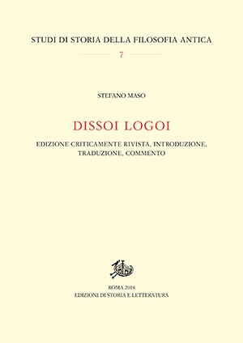
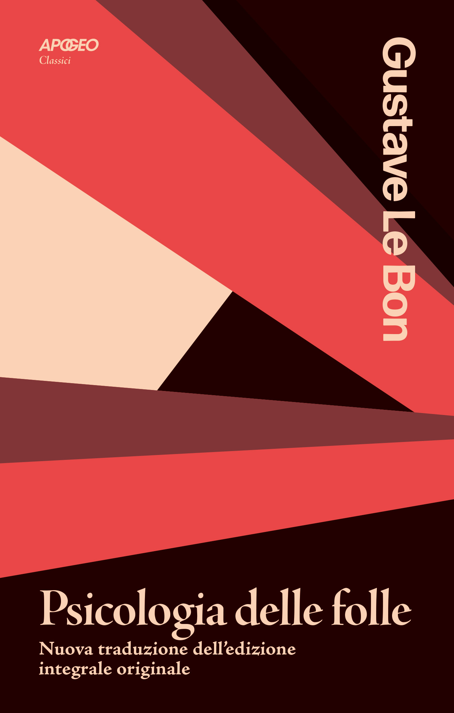

25:56 · 7 OPERE
Protagora, il relativismo e la terra piatta
Il filo del discorso
Riprendendo il precedente intervento su Carlo Sini e Protagora, Dr Divago si chiede come una conoscenza possa perdere autorità e venire soppiantata da un’opinione. L’esempio iniziale è la forma della Terra: il richiamo a Eratostene introduce una ricostruzione della trasmissione del sapere antico, usata dal relatore per discutere il rapporto fra dimostrazione e persuasione. I Dissoi logoi diventano il riferimento per la critica a una retorica capace di sostenere tesi opposte. Un incontro con un sostenitore della Terra piatta e l’aneddoto galileiano dell’«eppur si muove» conducono al ruolo di Internet, della televisione e dell’educazione. Nella parte centrale, la distinzione fra opinione e conoscenza viene contrapposta a ciò che il relatore chiama nullificazione delle idee: i fatti perderebbero forza quando sono subordinati alla cornice ideologica nella quale vengono presentati. Il discorso si estende alla scuola, al denaro e alle relazioni umane organizzate secondo logiche di potere. Giobbe e La roba di Verga introducono il limite della pretesa di dominio davanti all’esistenza e alla morte. Il richiamo a Le Bon e a I persuasori occulti di Packard accompagna infine la critica della propaganda nelle società democratiche. Le generalizzazioni sulla storia e sulle istituzioni restano tesi del relatore e richiedono riscontri distinti.
I libri nel discorso

Dissoi logoi (Discorsi duplici)
Copertina: Edizioni di Storia e Letteratura · 2018 · edizione critica a cura di Stefano Maso
Copertina editoriale autentica della monografia del 2018, collana Studi di storia della filosofia antica, n. 7. Il nome Stefano Maso indica l’autore dell’apparato critico e della traduzione; l’opera antica resta anonima.
Il titolo Dissoi logoi è pronunciato e il testo è descritto come esempio di retorica a tesi contrapposte.
Passaggio 4:26 ↗ · Fonti e libro ↗
Divina Commedia
Identificazione probabile
Copertina: Giunti Barbera · Passepartout, 2021 · edizione di riferimento
Le letture pubbliche di Dante da parte di Benigni alludono probabilmente alla Commedia, senza indicare canto o edizione.
Passaggio 15:48 ↗ · Fonti e libro ↗
Giobbe
Copertina del volume completo: San Paolo, 2014 · Nuova Versione dai Testi Antichi · edizione di riferimento
Giobbe è un libro della Bibbia. L’immagine mostra il volume completo San Paolo di riferimento, non un’edizione autonoma del singolo libro e non una versione identificata nella citazione.
Giobbe è nominato nel richiamo alla voce divina che interroga l’uomo sulla creazione: allusione al capitolo 38.
Passaggio 19:38 ↗ · Fonti e libro ↗
La roba
Copertina della raccolta Tutte le novelle: Newton Compton · Tutte le novelle · MiniMammut 209 · a cura di Sergio Campailla
Copertina autentica della raccolta integrale Newton Compton, ISBN 9788822700612. La roba è una novella di Novelle rusticane, compresa nella raccolta; la copertina non appartiene a un volume autonomo della singola novella.
Il relatore nomina La roba di Giovanni Verga e rievoca il finale di Mazzarò.
Passaggio 20:44 ↗ · Fonti e libro ↗
Psicologia delle folle
Copertina: Apogeo · 2025 · nuova traduzione dell’edizione integrale originale
Immagine autentica dell’opera, controllata visivamente; l’edizione di riferimento non è attribuita al filmato.
Le Bon e lo studio sulle masse sono nominati; il titolo bibliografico italiano è Psicologia delle folle.
Passaggio 23:05 ↗ · Fonti e libro ↗
I persuasori occulti
Copertina: Einaudi · ET Saggi · 2015 · traduzione di Carlo Fruttero
Immagine autentica dell’opera, controllata visivamente; l’edizione di riferimento non è attribuita al filmato.
I persuasori occulti e Vance Packard sono nominati nel passaggio sulle tecniche di propaganda.
Passaggio 23:22 ↗ · Fonti e libro ↗
Il Gattopardo
Identificazione probabile
Copertina: Feltrinelli · Universale Economica 900 · 2026
Immagine autentica dell’opera, controllata visivamente; l’edizione di riferimento non è attribuita al filmato.
La parafrasi sul cambiare tutto e il nome Tomasi di Lampedusa suggeriscono Il Gattopardo; titolo non annunciato.
Passaggio 24:16 ↗ · Fonti e libro ↗